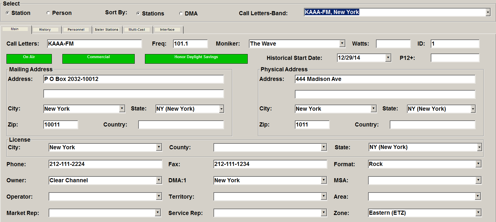

Main
When first accessing the Stations screen, the main tab is shown. This view shows basic information about each station, including call letters, address, time zone, etc.

Stations are selected from the list of stations in the Call Letters-Band dropdown.
The stations listed in the Call Letters-Band dropdown are sorted alphabetically by call letters by default. Click the “Sort by DMA” radio button to sort the stations alphabetically by DMA and Call Letters.
People can also be entered and viewed on the Stations screen by clicking the “Person” radio button in the upper left corner. All the fields available for “Stations” are also available for a “Person”. (Note: this type of “Person” is separate from station personnel. Station personnel are entered on the Personnel tab and are explained later in this document.)
Adding New Stations
New stations can be added using the Station Import, or they can be entered manually. To begin entering a new station manually, select the “New” option from the Call Letters-Band dropdown, press Tab, and fill out the required fields. The minimum fields needed to add a station into the Affiliate System are the Call Letters, DMA Market name, and Time Zone (and Station ID if station IDs are used). All other information is optional.
If you are not using Station ID numbers, the Station ID field will not appear on the screen.
Station Information
- Call Letters: The Call Letters and Band of the station (for example, KAAA-FM).
- Freq.: Frequency.
- Moniker: Station nickname.
- Watts: Power expressed in watts.
- Station ID: The Station ID is a unique number assigned to each station by the station data provider.This field will only be present if Station IDs are used.
- On Air/Off Air: This toggle is used to indicate whether the station is on air or off.
- Commercial/Non-Commercial: Non-commercial may be used by stations such as college stations or commercial free stations.
- Honor Daylight Savings/Ignore Daylight Savings: Used to indicate whether the station honors daylight saving time or not.
- Historical Start Date: The date you first started doing business with this station.The system will default to the start date of the earliest agreement, even though the true start date might be years earlier. Click in the Historical Start Date field to enter the true start date, or select the date from the calendar dropdown.
- P12+: The P12+ field stands for persons 12 and older, and reflects the station’s entire measured audience. The audience is either imported through the Station Import or manually entered.
Addresses
A station can have separate Mailing and Physical Addresses. The physical address is included if delivery service mail must be sent to an address other than the station’s mailing address.
On version 7.1 and above, there is a setting in the Traffic Site Options -> Copy tab labeled "Split Copy Station State Address By" that is used to determine which state to use for split copy (mailing address state, physical address state, or state of license). On prior software versions, the mailing address state is used.
The City and County within which a station is licensed can be the same or different from the Mailing or Physical Addresses.
There are also fields for entering the station’s phone number, fax number, and format. The format can be used by regional copy splits when defined for format so if regional copy is defined by format, it’s important the correct format gets entered.
Owner, Operator, Markets
Enter the Owner, DMA (Designated Market Area) and MSA (Metropolitan Statistical Area) if applicable.
If you do not create regions by MSAs and leave “Metro Split Copy” unchecked in the Traffic Site Options -> Options Screen, the MSA field will be optional.
The Operator can be set to “Same as Owner” or an operator name can be entered if the operator is different from the owner.
Assigning Network Reps and the Time Zone
Two special fields called Territory and Area can be used at your discretion to divide stations into sales areas.
You can assign a Market and/or Service Rep (designated in the User Options screen) to a station by selecting the Rep from the dropdown.
If you assign Salespeople and/or Service people by Vehicle, do not enter their names in the station.
You must enter the station’s time zone in the Time Zone field.
Important note about Time Zones: Affiliate spots will be created under normal circumstances for stations set to one of the four standard time zones: Eastern, Central, Mountain, and Pacific. When a station is set to the Hawaii (HST) or the Alaska (AST) time zone, then affiliate spots will not be created during the affiliate spot generation process for that station.